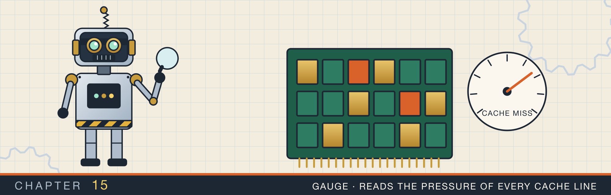
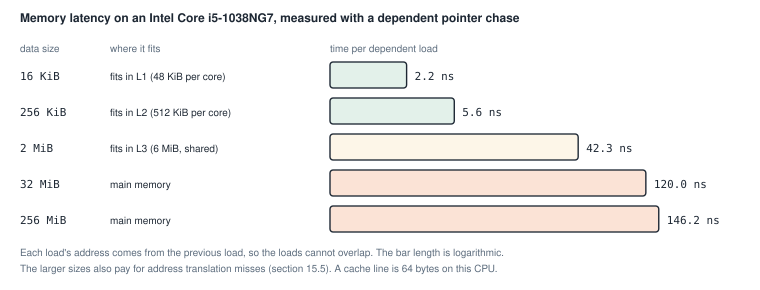
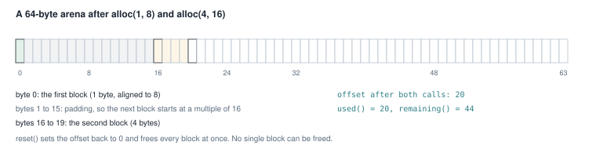
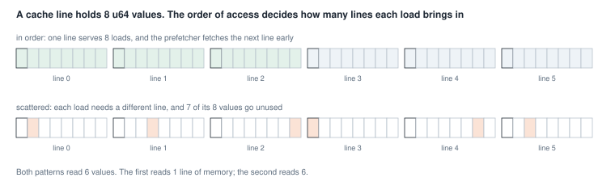
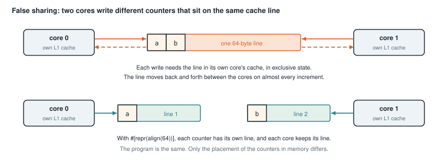
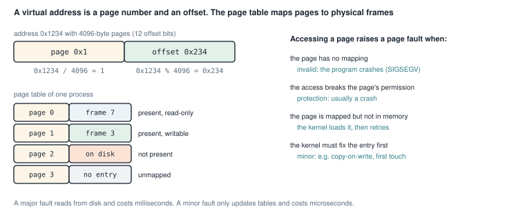
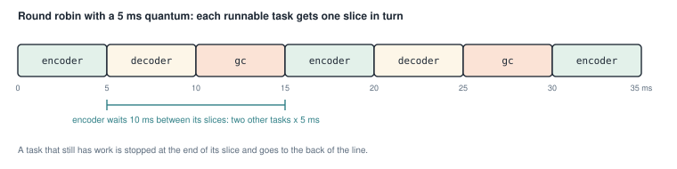
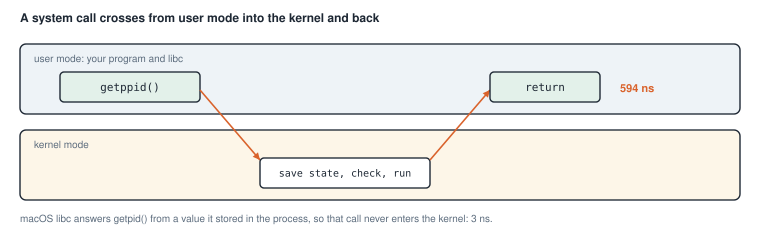

Memory, CPU caches, and the operating system
This chapter covers
- How long it takes the CPU to read memory, measured at five data sizes
- A bump allocator, and what alignment means
- Why the order in which you read an array changes the time, and a benchmark that measured something else
- False sharing: two threads that slow each other down without sharing any data
- Pages, page tables, and the kinds of page fault
- Round-robin scheduling, and what a system call costs
The earlier chapters counted steps: O(1), O(log n), O(n). Step counts predict how a program grows, but not how long one step takes. On a real machine, one memory read can take 2 ns or 150 ns, depending on where the data is. Chapter 13 already saw a factor of three between two caches with the same step count.
This chapter looks at the machine under the data structures. Section 15.1 measures the memory system. Sections 15.2 to 15.4 show three programs whose speed depends on how they lay out and touch memory. Sections 15.5 to 15.7 look at three services of the operating system: virtual memory, scheduling, and system calls.
Most programs in this chapter print times. Run them with --release, and expect your numbers to differ from mine.
All the numbers here come from one laptop with an Intel Core i5-1038NG7 CPU, running macOS.
15.1 How far away is memory?
Main memory, the RAM, is large and slow compared with the CPU. To hide the difference, the CPU keeps copies of recently used memory in small, fast memories called caches. There are usually three levels:
- L1 is the smallest and fastest, and each core has its own. On this CPU it holds 48 KiB of data per core.
- L2 is larger and slower, also per core: 512 KiB here.
- L3 is shared by all cores: 6 MiB here.
Caches do not copy single bytes. They copy blocks of 64 bytes, called cache lines. Reading one u64 brings
in the line around it, so the next seven u64 values in memory arrive at no extra cost.
To see the cost of each level, I measured a pointer chase. The program fills an array with the indexes of a
random cycle, so each element holds the index of the next one to read. The loop then runs
i = next[i] many times. Each read needs the result of the previous one, so the reads cannot overlap. The time per step is the time
of one read. Figure 15.1 shows the result for five array sizes.

A read from L1 took 2.2 ns. A read that had to go to main memory took 120 to 146 ns. In 120 ns, this CPU can run several hundred simple instructions. The larger sizes also include the cost of translating addresses, which section 15.5 explains.
Those five numbers describe one hierarchy, not five separate machines. Data in L1 answers a dependent read in 2.2 ns. The same read against 256 KiB costs 5.6 ns. That array no longer fits in a 48 KiB L1, so the line comes from L2. At 2 MiB the cost is 42.3 ns, having left L2 as well. From 32 MiB upward it is 120 ns or more, which is main memory. A larger level holds several times more than the one above it, and answers several times more slowly. The trade is forced. A store that answers in 2 ns has to be small, because reaching a location costs more as the store grows.
A cache line is 64 bytes, and it arrives as one unit. A program that reads one u64 and then the next seven
pays for a single line and uses all of it. A program that jumps to a new random line on every read pays the
same 120 ns. It uses one eighth of what it fetched.
Animation 15.1 follows single reads through the hierarchy, then a line read in order and lines read scattered.
The rest of the chapter comes back to one fact. Data that is close together in memory, and read in order, is much cheaper than data scattered around. Keeping related data close together is called locality.
15.2 A bump allocator
Programs get heap memory from an allocator. Every Box::new and every growing Vec asks the allocator for
a block, and every drop gives one back. A general-purpose allocator must handle blocks of any size, freed in any
order, from any thread. That takes bookkeeping.
A bump allocator is the simplest allocator. It owns one large buffer and an offset, the position of the
first free byte. To allocate, it hands out the bytes at the offset and moves the offset forward. It never frees a
single block. Instead, reset frees everything at once by setting the offset back to 0.
This fits work that allocates many small pieces and throws them all away together. A parser can allocate its syntax tree in an arena and drop it after compiling. A server can allocate per request and reset after sending the response.
15.2.1 Alignment
Most types must start at an address that is a multiple of some number, called their alignment. A u64 has
alignment 8, so it must start at an address divisible by 8. The CPU reads aligned values in one step, and some
instructions refuse unaligned ones.
So an allocator must sometimes skip bytes before a block, to reach an address with the right alignment. The skipped bytes are called padding. Figure 15.2 shows two allocations and the padding between them.

allocations_are_aligned. Aligning the second block to 16 costs 15 bytes of padding.15.2.2 The code
Listing 15.1 alloc (lines 27 to 42) and align_up (lines 65 to 70). src/problems/bump_allocator.rs
impl BumpArena {
// ...
/// Allocate `size` bytes aligned to `align`.
///
/// Returns `None` when the request does not fit. `align` must be a power of
/// two.
pub fn alloc(&mut self, size: usize, align: usize) -> Option<&mut [u8]> {
assert!(align.is_power_of_two(), "align must be a power of two");
let start = align_up(self.offset, align)?;
let end = start.checked_add(size)?;
if end > self.buffer.len() {
return None;
}
self.offset = end;
Some(&mut self.buffer[start..end])
}
// ...
}
fn align_up(offset: usize, align: usize) -> Option<usize> {
let mask = align - 1;
offset
.checked_add(mask)
.map(|value| value & !mask)
}align_up rounds the offset up to the next multiple of align. The alignment must be a power of two, which the
assert! in alloc checks. A power of two has exactly one bit set, so align - 1 is a mask with all the bits
below it set. For align = 16, the mask is 0b1111.
The rounding happens in two steps. Adding the mask pushes the offset past the next multiple, unless it is already
on one. Then & !mask clears the low bits, which rounds down to a multiple. Work through the second allocation of
figure 15.2 by hand:
- The offset is 1, and the alignment is 16, so the mask is 15.
- 1 + 15 = 16.
- 16 with the low four bits cleared is 16. The block starts at 16.
An offset of 16 would give 16 + 15 = 31, which rounds down to 16 again. An offset already aligned stays where it is.
alloc uses checked_add twice, and the ? operator returns None if either addition overflows. It also
returns None if the block would end past the buffer. Only after every check passes does it move the offset.
So a failed allocation leaves the arena unchanged, which the test exhaustion_returns_none_and_keeps_state
checks.
The block is returned as &mut [u8], a slice of the buffer. That reference borrows the arena mutably, so you
cannot call alloc again while you hold it. A production arena allocator hands out many live references at
once, and needs unsafe code or interior mutability to do so.
WARNING: align_up aligns the offset, not the memory address. The address of a block is the buffer’s address plus the offset. So the block is aligned only if the buffer
itself starts at a multiple of align. The buffer is a
Vec<u8>, which only promises alignment 1. The tests pass because the macOS allocator returns 16-byte aligned
blocks. A request for alignment 64 could return a misaligned address.
Listing 15.2 The complete file, with tests. src/problems/bump_allocator.rs
//! A bump (arena) allocator over a fixed byte buffer.
//!
//! Bump allocation is the simplest allocator: hand out bytes from a cursor and
//! never free an individual block. It is O(1) per allocation, has no fragmentation
//! bookkeeping, and is freed all at once with [`BumpArena::reset`]. Parsers,
//! request handlers, and per-frame buffers in games use exactly this shape.
//!
//! This version does not try to beat the system allocator. It shows alignment,
//! the memory layout you hand to hardware, and why "free everything at once" is
//! both the strength and the limitation.
/// A fixed-capacity bump allocator.
pub struct BumpArena {
buffer: Vec<u8>,
offset: usize,
}
impl BumpArena {
/// Create an arena backed by `capacity` zeroed bytes.
pub fn with_capacity(capacity: usize) -> Self {
Self {
buffer: vec![0; capacity],
offset: 0,
}
}
/// Allocate `size` bytes aligned to `align`.
///
/// Returns `None` when the request does not fit. `align` must be a power of
/// two.
pub fn alloc(&mut self, size: usize, align: usize) -> Option<&mut [u8]> {
assert!(align.is_power_of_two(), "align must be a power of two");
let start = align_up(self.offset, align)?;
let end = start.checked_add(size)?;
if end > self.buffer.len() {
return None;
}
self.offset = end;
Some(&mut self.buffer[start..end])
}
/// Bytes handed out so far, including alignment padding.
pub fn used(&self) -> usize {
self.offset
}
/// Bytes still available before the next allocation.
pub fn remaining(&self) -> usize {
self.buffer.len() - self.offset
}
/// Total capacity.
pub fn capacity(&self) -> usize {
self.buffer.len()
}
/// Free everything at once, as an arena does.
pub fn reset(&mut self) {
self.offset = 0;
}
}
fn align_up(offset: usize, align: usize) -> Option<usize> {
let mask = align - 1;
offset
.checked_add(mask)
.map(|value| value & !mask)
}
#[cfg(test)]
mod tests {
use super::*;
#[test]
fn allocations_are_aligned() {
let mut arena = BumpArena::with_capacity(64);
let first = arena.alloc(1, 8).expect("fits");
assert_eq!(first.as_ptr() as usize % 8, 0);
assert_eq!(first.len(), 1);
let second = arena.alloc(4, 16).expect("fits");
assert_eq!(second.as_ptr() as usize % 16, 0);
// The first block occupies 1 byte. Aligning the next block to 16 adds 15
// bytes of padding, so the arena has consumed 16 + 4 = 20 bytes.
assert_eq!(arena.used(), 20);
assert_eq!(arena.remaining(), 44);
}
#[test]
fn exhaustion_returns_none_and_keeps_state() {
let mut arena = BumpArena::with_capacity(16);
assert!(arena.alloc(16, 1).is_some());
let used_before = arena.used();
assert!(arena.alloc(1, 1).is_none());
assert_eq!(arena.used(), used_before, "a failed alloc must not advance");
}
#[test]
fn reset_reclaims_everything() {
let mut arena = BumpArena::with_capacity(32);
assert!(arena.alloc(20, 4).is_some());
assert_eq!(arena.remaining(), 12);
arena.reset();
assert_eq!(arena.used(), 0);
assert_eq!(arena.remaining(), arena.capacity());
assert!(arena.alloc(32, 1).is_some());
}
#[test]
fn zero_sized_allocation_is_allowed() {
let mut arena = BumpArena::with_capacity(8);
let empty = arena.alloc(0, 8).expect("fits");
assert!(empty.is_empty());
assert_eq!(arena.used(), 0);
}
#[test]
fn writes_are_isolated_between_allocations() {
let mut arena = BumpArena::with_capacity(16);
arena
.alloc(4, 4)
.expect("fits")
.copy_from_slice(&[1, 2, 3, 4]);
let second = arena.alloc(4, 4).expect("fits");
assert!(second.iter().all(|&byte| byte == 0));
second.copy_from_slice(&[9, 9, 9, 9]);
let view = arena.buffer.as_slice();
assert_eq!(&view[0..4], &[1, 2, 3, 4]);
assert_eq!(&view[4..8], &[9, 9, 9, 9]);
}
}$ cargo test --lib problems::bump_allocator
running 5 tests
test problems::bump_allocator::tests::allocations_are_aligned ... ok
test problems::bump_allocator::tests::exhaustion_returns_none_and_keeps_state ... ok
test problems::bump_allocator::tests::reset_reclaims_everything ... ok
test problems::bump_allocator::tests::zero_sized_allocation_is_allowed ... ok
test problems::bump_allocator::tests::writes_are_isolated_between_allocations ... ok
test result: ok. 5 passed; 0 failed; 0 ignored; 0 measured; 132 filtered out
15.3 Reading in order, and reading scattered
Figure 15.3 shows how the order of reads changes the work. Reading a u64 array in order uses every value of each cache
line it loads. The CPU also notices the pattern and fetches the next lines before they are needed, which is called
prefetching. Reading scattered values loads a whole line for each value and uses one eighth of it.

15.3.1 The program
Listing 15.3 The two loops (lines 9 to 30). src/bin/cs_locality.rs
use std::time::{Duration, Instant};
/// A power of two, so a stride must be odd to visit every index.
const ELEMENTS: usize = 4 * 1024 * 1024;
/// Odd, and therefore coprime with `ELEMENTS`: the walk visits every slot once.
const STRIDE: usize = 1_000_003;
fn sequential_sum(data: &[u64]) -> (u64, Duration) {
let start = Instant::now();
let sum = data.iter().sum();
(sum, start.elapsed())
}
fn strided_sum(data: &[u64]) -> (u64, Duration) {
let start = Instant::now();
let mut index = 0usize;
let mut sum = 0u64;
for _ in 0..data.len() {
index = (index + STRIDE) % data.len();
sum = sum.wrapping_add(data[index]);
}
(sum, start.elapsed())
}Both functions add up every element of the same 32 MiB array, which is too large for any cache.
sequential_sum reads it in order with data.iter().sum(). strided_sum jumps 1,000,003 elements forward at
each step, wrapping around with %.
The jump must eventually visit every element exactly once. The array has 4,194,304 elements, which is 2 to the power 22. The stride is odd, so it shares no factor with a power of two. A walk whose step shares no factor with the length visits every position once before it returns to the start.
Listing 15.4 The complete program. src/bin/cs_locality.rs
//! Cache locality: the same data is much faster to walk in order than to jump
//! around, because memory moves in cache lines and the prefetcher helps only the
//! sequential case.
//!
//! Run with: cargo run --bin cs_locality
use std::time::{Duration, Instant};
/// A power of two, so a stride must be odd to visit every index.
const ELEMENTS: usize = 4 * 1024 * 1024;
/// Odd, and therefore coprime with `ELEMENTS`: the walk visits every slot once.
const STRIDE: usize = 1_000_003;
fn sequential_sum(data: &[u64]) -> (u64, Duration) {
let start = Instant::now();
let sum = data.iter().sum();
(sum, start.elapsed())
}
fn strided_sum(data: &[u64]) -> (u64, Duration) {
let start = Instant::now();
let mut index = 0usize;
let mut sum = 0u64;
for _ in 0..data.len() {
index = (index + STRIDE) % data.len();
sum = sum.wrapping_add(data[index]);
}
(sum, start.elapsed())
}
fn main() {
let data: Vec<u64> = (0..ELEMENTS as u64).collect();
println!(
"{} elements, {} MiB",
data.len(),
data.len() * 8 / (1024 * 1024)
);
let (sequential, sequential_time) = sequential_sum(&data);
let (strided, strided_time) = strided_sum(&data);
println!("\n sequential: {sequential} in {sequential_time:?}");
println!(" strided: {strided} in {strided_time:?}");
// Both touch every element exactly once, so the sums must match; only the
// access pattern differs.
assert_eq!(sequential, strided);
assert_eq!(sequential, ELEMENTS as u64 * (ELEMENTS as u64 - 1) / 2);
println!("\nequal work, different pattern; timings vary by machine");
}main checks that both sums are equal, and that they match the formula for 0 + 1 + … + (n − 1). The two loops
did the same additions. Only the order of reading differs.
$ cargo run --release --bin cs_locality
4194304 elements, 32 MiB
sequential: 8796090925056 in 3.127311ms
strided: 8796090925056 in 37.375274ms
equal work, different pattern; timings vary by machine
15.3.2 What the strided loop measured
The strided loop took twelve times as long. It is tempting to credit all of that to the cache, but the two loops differ in more than their reading order.
strided_sum computes (index + STRIDE) % data.len() at every step. data.len() is not known at compile time,
so % is compiled as a real division instruction, one of the slowest integer instructions. Each step’s index
depends on the previous one, so the divisions run one after another.
To separate the two costs, I ran four variants of the loop:
Table 15.1 Variants of the 32 MiB sum, release build
| Loop | Time |
|---|---|
data.iter().sum(), in order | 3.1 ms |
strided_sum as written, stride 1,000,003 | 37.4 ms |
strided_sum with stride 1, reading in order | 36 ms |
| sum through a list of indexes, in order | 4.4 ms |
| sum through a list of indexes, in random order | 31 ms |
| pointer chase in random order, each read waits for the last | 478 ms |
The third row settles it. With stride 1, the loop reads memory in perfect order, and it still takes 36 ms. The
division sets the pace of strided_sum, not the memory.
The last three rows remove the division and show the real cost of scattered reads. Reading through a list of indexes in random order took about seven times as long as reading through the same list in order. The reads are independent of each other, so the CPU keeps several of them in flight at once. In the pointer chase of section 15.1, each read must wait for the previous one. There, the same 4 million reads take 478 ms, about 114 ns each.
Two lessons come out of this. Scattered memory access is expensive, from a few times slower to a hundred times, depending on whether reads can overlap. And a benchmark measures everything in its loop. Before you explain a number, change one thing at a time and check that the number moves.
15.4 False sharing
Chapter 16 covers threads in depth. This section needs only two facts about them:
thread::scope(|scope| { ... })creates a scope. Threads started inside it withscope.spawnmay borrow local variables, because the scope waits for all of them to finish before it returns.- An atomic integer such as
AtomicUsizecan be changed by several threads at once without a lock.fetch_add(1, Ordering::Relaxed)adds 1 in one indivisible step. TheOrderingargument is explained in chapter 16.Relaxedis enough for a counter that nothing else depends on.
Now the problem. Each core has its own L1 cache. Before a core writes to a cache line, it must have the only copy of that line. Every other core’s copy is thrown away. If two cores write to the same line in turn, the line moves back and forth between them on almost every write.
That is expected when two threads write the same variable. False sharing is the same slowdown when the two threads write different variables that happen to sit in the same cache line (figure 15.4). The threads share no data, but the hardware moves memory in whole lines, so they share a line.

Animation 15.2 shows the line moving between the cores, then the same writes with one line per counter.
The fix is to place each counter in its own cache line. #[repr(align(64))] on a struct makes its alignment 64,
so every value of the type starts on a new line. The size rounds up to a multiple of the alignment, so the value
fills the line.
15.4.1 Four counters
Listing 15.5 Two counter types (lines 16 to 41). src/bin/concurrency_false_sharing.rs
use std::{
mem::size_of,
sync::atomic::{AtomicUsize, Ordering},
thread,
time::{Duration, Instant},
};
/// Packed by default: consecutive counters share a cache line.
struct Unpadded(AtomicUsize);
impl Unpadded {
fn new() -> Self {
Self(AtomicUsize::new(0))
}
fn increment(&self) {
self.0.fetch_add(1, Ordering::Relaxed);
}
}
/// Padded to a cache line, so no two counters share one.
#[repr(align(64))]
struct Padded(AtomicUsize);
impl Padded {
fn new() -> Self {
Self(AtomicUsize::new(0))
}
fn increment(&self) {
self.0.fetch_add(1, Ordering::Relaxed);
}
}Unpadded is 8 bytes, so a Vec of four of them fits in 32 bytes, inside one or two cache lines. Padded is 64
bytes, and each one gets a line.
Listing 15.6 The timed run (lines 43 to 59).
/// Scoped threads borrow the vector directly, so there is no `Arc` and no clone.
fn run_unpadded() -> Duration {
let counters: Vec<Unpadded> = (0..THREADS)
.map(|_| Unpadded::new())
.collect();
let start = Instant::now();
thread::scope(|scope| {
for counter in &counters {
scope.spawn(move || {
for _ in 0..ITERATIONS {
counter.increment();
}
});
}
});
start.elapsed()
}The loop for counter in &counters gives each thread a reference to its own counter. move || moves that
reference into the thread’s closure. Each thread increments only its own counter, two million times.
Listing 15.7 The complete program. src/bin/concurrency_false_sharing.rs
//! False sharing: two independent counters that land on the same cache line make
//! each other slow, because every write moves the line between cores.
//!
//! Run with: cargo run --bin concurrency_false_sharing
use std::{
mem::size_of,
sync::atomic::{AtomicUsize, Ordering},
thread,
time::{Duration, Instant},
};
const THREADS: usize = 4;
const ITERATIONS: usize = 2_000_000;
/// Packed by default: consecutive counters share a cache line.
struct Unpadded(AtomicUsize);
impl Unpadded {
fn new() -> Self {
Self(AtomicUsize::new(0))
}
fn increment(&self) {
self.0.fetch_add(1, Ordering::Relaxed);
}
}
/// Padded to a cache line, so no two counters share one.
#[repr(align(64))]
struct Padded(AtomicUsize);
impl Padded {
fn new() -> Self {
Self(AtomicUsize::new(0))
}
fn increment(&self) {
self.0.fetch_add(1, Ordering::Relaxed);
}
}
/// Scoped threads borrow the vector directly, so there is no `Arc` and no clone.
fn run_unpadded() -> Duration {
let counters: Vec<Unpadded> = (0..THREADS)
.map(|_| Unpadded::new())
.collect();
let start = Instant::now();
thread::scope(|scope| {
for counter in &counters {
scope.spawn(move || {
for _ in 0..ITERATIONS {
counter.increment();
}
});
}
});
start.elapsed()
}
fn run_padded() -> Duration {
let counters: Vec<Padded> = (0..THREADS)
.map(|_| Padded::new())
.collect();
let start = Instant::now();
thread::scope(|scope| {
for counter in &counters {
scope.spawn(move || {
for _ in 0..ITERATIONS {
counter.increment();
}
});
}
});
start.elapsed()
}
fn main() {
println!("atomic: {} bytes", size_of::<AtomicUsize>());
println!(
"unpadded: {} bytes (several counters per 64 byte line)",
size_of::<Unpadded>()
);
println!(
"padded: {} bytes (one counter per 64 byte line)",
size_of::<Padded>()
);
let unpadded = run_unpadded();
let padded = run_padded();
println!("\n{THREADS} threads x {ITERATIONS} increments, each on its own counter");
println!(" unpadded (shared lines): {unpadded:?}");
println!(" padded (own line): {padded:?}");
assert!(size_of::<Padded>() >= 64, "padding must fill a cache line");
assert!(unpadded.as_nanos() > 0 && padded.as_nanos() > 0);
println!("\ntimings vary by machine; the padded run is normally the faster one");
}$ cargo run --release --bin concurrency_false_sharing
atomic: 8 bytes
unpadded: 8 bytes (several counters per 64 byte line)
padded: 64 bytes (one counter per 64 byte line)
4 threads x 2000000 increments, each on its own counter
unpadded (shared lines): 205.466825ms
padded (own line): 20.667095ms
timings vary by machine; the padded run is normally the faster one
Adding 56 bytes of padding to each counter made the same work ten times faster.
15.4.2 Two counters
The second program makes the sharing certain instead of likely. SameLine holds both counters and is aligned to
64, so both are guaranteed to be in one line.
#[repr(align(64))] makes every value of the type start at an address that is a multiple of 64. That is the size of a cache line. SameLine puts two counters in one line on purpose. Padded gives one counter a whole line:
/// Both counters are guaranteed to live inside one 64-byte cache line.
#[repr(align(64))]
struct SameLine {
a: AtomicU64,
b: AtomicU64,
}
/// Each of these occupies its own 64-byte block.
#[repr(align(64))]
struct Padded(AtomicU64);Listing 15.8 The complete program. src/bin/false_sharing.rs
use std::{
sync::atomic::{AtomicU64, Ordering},
thread,
time::{Duration, Instant},
};
const ITERS: u64 = 20_000_000;
/// Both counters are guaranteed to live inside one 64-byte cache line.
#[repr(align(64))]
struct SameLine {
a: AtomicU64,
b: AtomicU64,
}
/// Each of these occupies its own 64-byte block.
#[repr(align(64))]
struct Padded(AtomicU64);
fn time<F: FnOnce()>(f: F) -> Duration {
let t = Instant::now();
f();
t.elapsed()
}
fn main() {
// ---- 1. False sharing: two counters on the same cache line ----
let same = SameLine {
a: AtomicU64::new(0),
b: AtomicU64::new(0),
};
let d1 = time(|| {
thread::scope(|s| {
s.spawn(|| {
for _ in 0..ITERS {
same.a.fetch_add(1, Ordering::Relaxed);
}
});
s.spawn(|| {
for _ in 0..ITERS {
same.b.fetch_add(1, Ordering::Relaxed);
}
});
});
});
// ---- 2. Padded: same work, but counters are on separate cache lines ----
let p0 = Padded(AtomicU64::new(0));
let p1 = Padded(AtomicU64::new(0));
let d2 = time(|| {
thread::scope(|s| {
s.spawn(|| {
for _ in 0..ITERS {
p0.0.fetch_add(1, Ordering::Relaxed);
}
});
s.spawn(|| {
for _ in 0..ITERS {
p1.0.fetch_add(1, Ordering::Relaxed);
}
});
});
});
println!("same cache line (false sharing): {:?}", d1);
println!("padded (separate lines): {:?}", d2);
}time is a small generic helper. It takes any closure that can be called once, F: FnOnce(), runs it, and
returns how long it took.
The spawned closures have no move. They borrow same, p0, and p1 directly, which thread::scope allows.
$ cargo run --release --bin false_sharing
same cache line (false sharing): 838.152232ms
padded (separate lines): 170.243616ms
Here the difference is about five times.
NOTE: A cache line is 64 bytes on this Intel CPU. Apple’s M-series CPUs use 128-byte lines. Some Intel CPUs also fetch lines in adjacent pairs, so some libraries pad shared counters to 128 bytes to be safe on both.
15.5 Pages and page faults
Every address your program uses is a virtual address. The operating system gives each process its own private range of addresses. The CPU translates each virtual address into a physical address, a location in the actual RAM.
Translation works on fixed-size blocks called pages. On this machine a page is 4,096 bytes. Apple’s ARM Macs use 16 KiB pages. The operating system keeps a page table for each process, which maps each virtual page to a physical block of RAM, called a frame.
An address splits into two parts (figure 15.5). The high part is the page number, which the page table translates. The low part is the offset inside the page, which stays the same. With 4,096-byte pages, the offset is the low 12 bits, because 2 to the power 12 is 4,096.

Looking up the page table on every access would be slow. The CPU keeps recent translations in a small cache called the TLB (translation lookaside buffer). Scattered reads over a large array need many different pages, miss the TLB, and pay for a table lookup. That cost is part of the larger numbers in figure 15.1.
When the translation cannot complete, the CPU stops the program and hands control to the kernel. This is a page fault. The kernel decides what kind it is:
- Invalid: the address is not mapped at all. The program is stopped, usually with a segmentation fault.
- Protection: the page is mapped, but the access is not allowed, such as a write to a read-only page.
- Major: the page is valid, but its contents are on disk. The kernel reads it in and restarts the access. This takes milliseconds.
- Minor: the kernel can fix the mapping without reading the disk. Examples are the first write to a freshly
allocated page, or a write to a page shared after
fork(copy-on-write). This takes microseconds.
Listing 15.9 The address arithmetic and the fault model (lines 6 to 35). src/bin/os_paging.rs
const PAGE_SIZE: u64 = 4096;
fn split_page(address: u64) -> (u64, u64) {
(address / PAGE_SIZE, address % PAGE_SIZE)
}
fn pages_needed(bytes: u64) -> u64 {
bytes.div_ceil(PAGE_SIZE)
}
#[derive(Debug, PartialEq, Eq)]
enum Fault {
/// The page is resident; a copy-on-write write or permission upgrade.
Minor,
/// The mapping is valid but the page must be read from backing store.
Major,
/// The mapping is valid and resident, but the access permission is wrong.
Protection,
/// No valid mapping at this address.
Invalid,
}
fn classify_fault(mapped: bool, present: bool, writable: bool) -> Fault {
match (mapped, present, writable) {
(false, _, _) => Fault::Invalid,
(true, false, _) => Fault::Major,
(true, true, false) => Fault::Protection,
(true, true, true) => Fault::Minor,
}
}split_page divides by the page size for the page number, and takes the remainder for the offset.
pages_needed rounds up with div_ceil, because 4,097 bytes need two pages, not one.
classify_fault matches on three facts at once, written as a tuple. They are: is the address mapped, is
the page present in memory, and does the mapping allow the access. The arms are tried in order, so the first arm that fits wins.
(false, _, _) catches every unmapped address, whatever the other two values are.
The model is a simplification. It treats every page that is not in memory as a major fault. A real kernel also counts some of those as minor, because no disk read is needed. Examples are a first touch of new memory, and a file page already in the kernel’s file cache.
Listing 15.10 The complete program. src/bin/os_paging.rs
//! Virtual memory arithmetic: address to page and offset, page counts, and how a
//! page fault is classified.
//!
//! Run with: cargo run --bin os_paging
const PAGE_SIZE: u64 = 4096;
fn split_page(address: u64) -> (u64, u64) {
(address / PAGE_SIZE, address % PAGE_SIZE)
}
fn pages_needed(bytes: u64) -> u64 {
bytes.div_ceil(PAGE_SIZE)
}
#[derive(Debug, PartialEq, Eq)]
enum Fault {
/// The page is resident; a copy-on-write write or permission upgrade.
Minor,
/// The mapping is valid but the page must be read from backing store.
Major,
/// The mapping is valid and resident, but the access permission is wrong.
Protection,
/// No valid mapping at this address.
Invalid,
}
fn classify_fault(mapped: bool, present: bool, writable: bool) -> Fault {
match (mapped, present, writable) {
(false, _, _) => Fault::Invalid,
(true, false, _) => Fault::Major,
(true, true, false) => Fault::Protection,
(true, true, true) => Fault::Minor,
}
}
fn main() {
println!("page size: {PAGE_SIZE} bytes");
println!("\naddress -> page, offset");
for address in [0u64, 0x1234, 0x1fff, 0x2000] {
let (page, offset) = split_page(address);
println!(" 0x{address:04x} -> page {page:>2}, offset 0x{offset:03x}");
}
println!("\npages needed");
for bytes in [0u64, 1, PAGE_SIZE, PAGE_SIZE + 1] {
println!(" {bytes:>5} bytes -> {}", pages_needed(bytes));
}
println!("\nfault classification");
println!(
" unmapped -> {:?}",
classify_fault(false, false, false)
);
println!(
" mapped, not in ram -> {:?}",
classify_fault(true, false, true)
);
println!(
" resident, read-only-> {:?}",
classify_fault(true, true, false)
);
println!(
" resident, writable -> {:?}",
classify_fault(true, true, true)
);
assert_eq!(split_page(0x1234), (1, 0x234));
assert_eq!(pages_needed(0), 0);
assert_eq!(pages_needed(PAGE_SIZE + 1), 2);
assert_eq!(classify_fault(true, false, true), Fault::Major);
assert_eq!(classify_fault(true, true, false), Fault::Protection);
assert_eq!(classify_fault(false, true, true), Fault::Invalid);
println!("\nall checks passed");
}$ cargo run --bin os_paging
page size: 4096 bytes
address -> page, offset
0x0000 -> page 0, offset 0x000
0x1234 -> page 1, offset 0x234
0x1fff -> page 1, offset 0xfff
0x2000 -> page 2, offset 0x000
pages needed
0 bytes -> 0
1 bytes -> 1
4096 bytes -> 1
4097 bytes -> 2
fault classification
unmapped -> Invalid
mapped, not in ram -> Major
resident, read-only-> Protection
resident, writable -> Minor
all checks passed
0x1fff is the last byte of page 1, and 0x2000 is the first byte of page 2.
15.6 Taking turns on the CPU
A machine runs more threads than it has cores. The operating system’s scheduler decides which thread runs on each core, and switches between them many times per second. A context switch saves one thread’s registers and loads another’s.
Round robin is the simplest fair policy. The runnable tasks wait in a line. The first runs for a fixed time, called the quantum or time slice, and then goes to the back of the line (figure 15.6). No task can hold a core forever, so none starves.

Listing 15.11 The complete program. src/bin/os_scheduler.rs
//! Round-robin scheduling: each runnable task gets one fixed time slice in turn,
//! so no task starves. This is the simplest fair policy a scheduler can use.
//!
//! Run with: cargo run --bin os_scheduler
const QUANTUM_MS: u64 = 5;
/// The task chosen on each of `ticks` time slices.
fn schedule<'a>(tasks: &[&'a str], ticks: usize) -> Vec<&'a str> {
if tasks.is_empty() {
return Vec::new();
}
(0..ticks)
.map(|tick| tasks[tick % tasks.len()])
.collect()
}
fn main() {
let tasks = ["encoder", "decoder", "gc"];
println!("{} runnable tasks, {QUANTUM_MS} ms quantum", tasks.len());
for (tick, task) in schedule(&tasks, 7).iter().enumerate() {
let start = tick as u64 * QUANTUM_MS;
println!(
" slice {tick}: {start:>2}-{:>2} ms {task}",
start + QUANTUM_MS
);
}
let order = schedule(&tasks, 7);
assert_eq!(
order,
[
"encoder", "decoder", "gc", "encoder", "decoder", "gc", "encoder"
]
);
assert!(schedule(&[], 3).is_empty());
// A long task is preempted, not run to completion, which is what bounds its
// worst-case latency to one quantum times the number of tasks.
println!(
"\nworst-case wait for one slice: {} ms",
QUANTUM_MS * tasks.len() as u64
);
println!("all checks passed");
}schedule returns the task for each slice: slice tick goes to task tick % tasks.len(). The early return
avoids a division by zero when there are no tasks.
The signature fn schedule<'a>(tasks: &[&'a str], ticks: usize) -> Vec<&'a str> has one named lifetime. It
says that the returned names borrow from the same strings as the names in tasks, not from the slice that holds
them. The caller can drop the slice and keep the result.
$ cargo run --bin os_scheduler
3 runnable tasks, 5 ms quantum
slice 0: 0- 5 ms encoder
slice 1: 5-10 ms decoder
slice 2: 10-15 ms gc
slice 3: 15-20 ms encoder
slice 4: 20-25 ms decoder
slice 5: 25-30 ms gc
slice 6: 30-35 ms encoder
worst-case wait for one slice: 15 ms
all checks passed
Between two of its own slices, a task waits 10 ms, while the other two tasks run. From an arbitrary moment, it waits at most one full round of 15 ms, which is the number the program prints. A shorter quantum makes tasks wait less, but switches more often, and each switch costs time.
15.7 The cost of a system call
A program cannot touch hardware or other processes directly. It asks the kernel, with a system call: opening a file, reading a socket, starting a thread. The CPU switches from user mode into kernel mode, the kernel does the work, and the CPU switches back (figure 15.7). The switch itself costs time, even when the work is tiny.

15.7.1 Calling C from Rust
The program calls getpid, which returns the process ID. getpid is a C function from the system’s C library.
The libc crate declares it for Rust.
Calling a function written in another language is called a foreign function interface (FFI) call. Rust
cannot check what C code does, so every call to it must be inside an unsafe block. Each block here carries a
SAFETY comment explaining why the call is sound. getpid takes no pointers and changes no memory.
Listing 15.12 The timed loop (lines 27 to 47). src/bin/syscall_overhead.rs
use std::time::Instant;
/// Calls `getpid()` `iterations` times and returns the average cost in
/// nanoseconds per call.
fn measure_getpid_ns_per_call(iterations: u64) -> f64 {
let start = Instant::now();
for _ in 0..iterations {
// SAFETY: `libc::getpid` is a pure read-only system call with no
// pointer arguments and no memory side effects. The FFI declaration in
// the `libc` crate matches the Linux kernel ABI.
//
// `black_box` prevents the optimizer from assuming the loop has no
// observable effect, which matters because the syscall result is
// otherwise unused.
unsafe {
libc::getpid();
}
}
let elapsed = start.elapsed();
elapsed.as_nanos() as f64 / iterations as f64
}The comment inside the loop mentions black_box, but the loop does not use it, and does not need it. The compiler
cannot see inside an external C function, so it must assume each call has an effect, and it cannot remove the
loop.
Listing 15.13 The complete program. src/bin/syscall_overhead.rs
// ============================================================================
// Syscall overhead measurement
//
// Ported from the Rust playground repo (`mkdir_syscall.rs`).
//
// What this measures:
// - Every syscall crosses the user/kernel boundary: argument validation,
// kernel work, scheduling checks, and return to user space.
// - This program calls `getpid()` in a tight loop and estimates the average
// per-call cost. `getpid()` is a tiny syscall, so the measured cost is
// close to the irreducible syscall overhead on this kernel/hardware.
//
// Where this appears in practice:
// - High-performance data planes care about per-packet or per-I/O syscall
// cost. The difference between one syscall per event and batching via
// io_uring/recvmmsg can be enormous.
// - It also demonstrates unsafe FFI, safety comments, warm-up loops, and
// benchmark methodology: warm the code path, run enough iterations, and
// report average cost rather than one lucky sample.
//
// Run:
// cargo run --bin syscall_overhead
// ============================================================================
use std::time::Instant;
/// Calls `getpid()` `iterations` times and returns the average cost in
/// nanoseconds per call.
fn measure_getpid_ns_per_call(iterations: u64) -> f64 {
let start = Instant::now();
for _ in 0..iterations {
// SAFETY: `libc::getpid` is a pure read-only system call with no
// pointer arguments and no memory side effects. The FFI declaration in
// the `libc` crate matches the Linux kernel ABI.
//
// `black_box` prevents the optimizer from assuming the loop has no
// observable effect, which matters because the syscall result is
// otherwise unused.
unsafe {
libc::getpid();
}
}
let elapsed = start.elapsed();
elapsed.as_nanos() as f64 / iterations as f64
}
fn main() {
const ITERATIONS: u64 = 10_000_000;
// Warm up the code path before timing. The first calls may fault in the
// libc/PLT, cache lines, or CPU frequency may still be ramping.
for _ in 0..100_000 {
// SAFETY: same reasoning as above; read-only syscall.
unsafe { libc::getpid() };
}
let ns_per_call = measure_getpid_ns_per_call(ITERATIONS);
println!("Iterations: {}", ITERATIONS);
println!(
"Total time: {:.3}s",
ns_per_call * ITERATIONS as f64 / 1e9
);
println!("Per syscall: {:.1} ns", ns_per_call);
// Example framing: if a service processed 10M packets/s and used one
// getpid-style syscall per packet, this fraction of each second would be
// spent crossing into the kernel just for the syscall overhead.
let cpu_seconds_per_second = ns_per_call * 10_000_000.0 / 1_000_000_000.0;
println!(
"At 10M calls/s, syscall overhead would consume: {:.2} CPU-seconds per second",
cpu_seconds_per_second
);
}
// ============================================================================
// Tests (cargo test --bin syscall_overhead)
// ============================================================================
#[cfg(test)]
mod tests {
use super::*;
#[test]
fn measurement_returns_a_positive_finite_number() {
let ns = measure_getpid_ns_per_call(10_000);
assert!(ns.is_finite(), "nanoseconds per call must be finite");
assert!(ns > 0.0, "a syscall cannot cost zero time");
// On any real kernel this is microseconds or tens/hundreds of ns, not
// seconds per call.
assert!(
ns < 1_000_000.0,
"suspiciously slow syscall measurement: {ns} ns"
);
}
#[test]
fn getpid_returns_nonzero_pid() {
// SAFETY: read-only syscall, no pointers, no side effects.
let pid = unsafe { libc::getpid() };
assert!(pid > 0);
}
}main warms up with 100,000 untimed calls, then times ten million. Warming up lets the first-call costs, such as
loading the function’s code into the cache, happen outside the measurement.
$ cargo run --release --bin syscall_overhead
Iterations: 10000000
Total time: 0.031s
Per syscall: 3.1 ns
At 10M calls/s, syscall overhead would consume: 0.03 CPU-seconds per second
15.7.2 What the 3.1 ns measured
3.1 ns is far too fast for a trip into the kernel. It is about the time of two L1 reads. The program measured something other than its title says.
The C library on macOS stores the process ID the first time it is asked, and answers later getpid calls from
that stored value. None of the ten million calls entered the kernel.
To measure a real round trip, the call must be one the library cannot answer by itself. On the same machine, I
timed getppid, which returns the parent’s process ID, and a raw syscall(SYS_getpid). Both took about 594 ns
per call, nearly 200 times the cached getpid.
On Linux, the answer is different again. The GNU C library stopped caching getpid in version 2.25, so there the
same program does measure a real system call.
The lesson matches section 15.3. Before you trust a number, check that the code did the work you meant to time.
The comment block at the top of the file names the practical point. A program that handles millions of events
per second cannot afford one system call per event. Interfaces such as Linux’s recvmmsg and io_uring exist to
handle many events per system call.
Summary
- Reading memory on this laptop took 2.2 ns from L1 and up to 146 ns from main memory. Caches move 64-byte lines.
- A bump allocator hands out bytes from an offset and frees everything at once.
(offset + align - 1) & !(align - 1)rounds an offset up to a power-of-two alignment. - Reading in order uses whole cache lines and lets the CPU prefetch. Scattered reads were about seven times slower when independent, and about 114 ns each when each depended on the last.
- The
cs_localitybenchmark mostly measured a division instruction. Change one thing at a time before explaining a number. - False sharing slows threads that write different variables in one cache line.
#[repr(align(64))]gave each counter its own line and made the loop up to ten times faster. - A virtual address is a page number and an offset. The page table maps pages to frames, the TLB caches the mappings, and a page fault hands control to the kernel.
- Round robin gives each task one quantum in turn. A shorter quantum lowers waiting but adds switches.
- A system call costs hundreds of nanoseconds here. macOS answers
getpidwithout one, so the benchmark measured a cached value.
Chapter 16 starts the concurrency part of the book: threads, atomics, and locks, and the rules that keep them correct.
Exercises
- Change
strided_sumto use& (data.len() - 1)instead of% data.len(), and compare its time with stride 1 and stride 1,000,003. - Write the pointer chase of section 15.1, and measure it on your machine for sizes from 4 KiB to 512 MiB. Find where the time jumps, and compare with your CPU’s cache sizes.
- Fix the warning in section 15.2. Make
BumpArenaallocate its buffer withstd::alloc::allocand aLayoutaligned to 64. Add a test that requests alignment 64. - Change
concurrency_false_sharing.rsto use#[repr(align(128))], and check whether the time changes on your machine. - Time
getppidin a loop on your system, and compare it withgetpid.